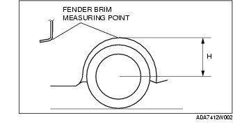

Wheel alignment pre-inspection
1. Make sure that there are no passengers or luggage aboard the vehicle.
2. Inspect the tire inflation.
- • Adjust to the recommended pressure if necessary. (See SUSPENSION TECHNICAL DATA.)
3. Inspect the wheel bearing play.
- • Correct if necessary. (See WHEEL HUB, STEERING KNUCKLE PRE-INSPECTION.)
- (See REAR AXLE PRE-INSPECTION.)
4. Inspect the wheel runout.
- • Correct if necessary. (See SUSPENSION TECHNICAL DATA.)
5. Shake the vehicle and inspect the ball joints and steering linkage for excessive looseness.
6. Shake the vehicle to inspect the operation of the shock absorbers.
7. Measure the height from the center of the wheel to the fender brim.

8. Verify that the difference between the left and right measurement H measured in Step 7 is within the specification.
9. Park the vehicle on level ground, in an unloaded* condition, and with the wheels straight forward.
Unloaded: Fuel tank is full. Engine coolant and engine oil are at specified level. Spare tire, jack and tools are in designated position.